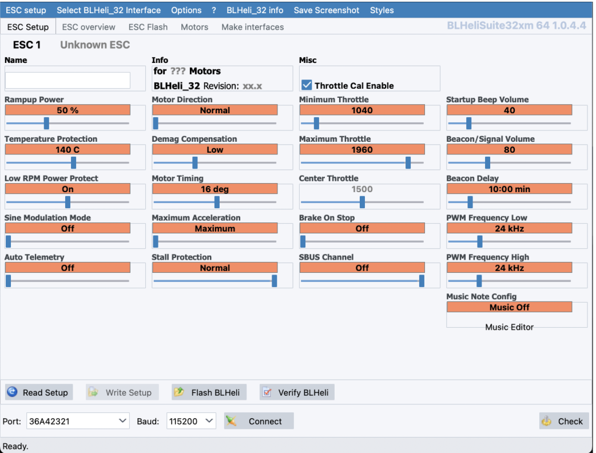
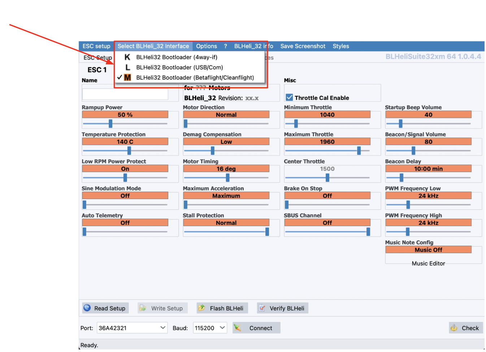
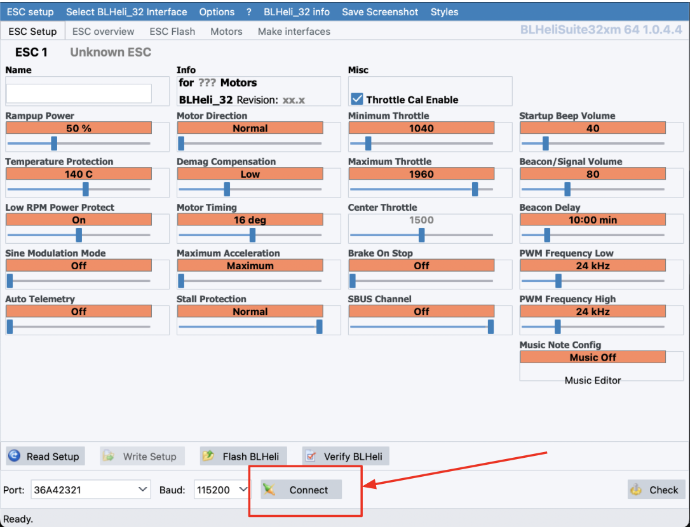
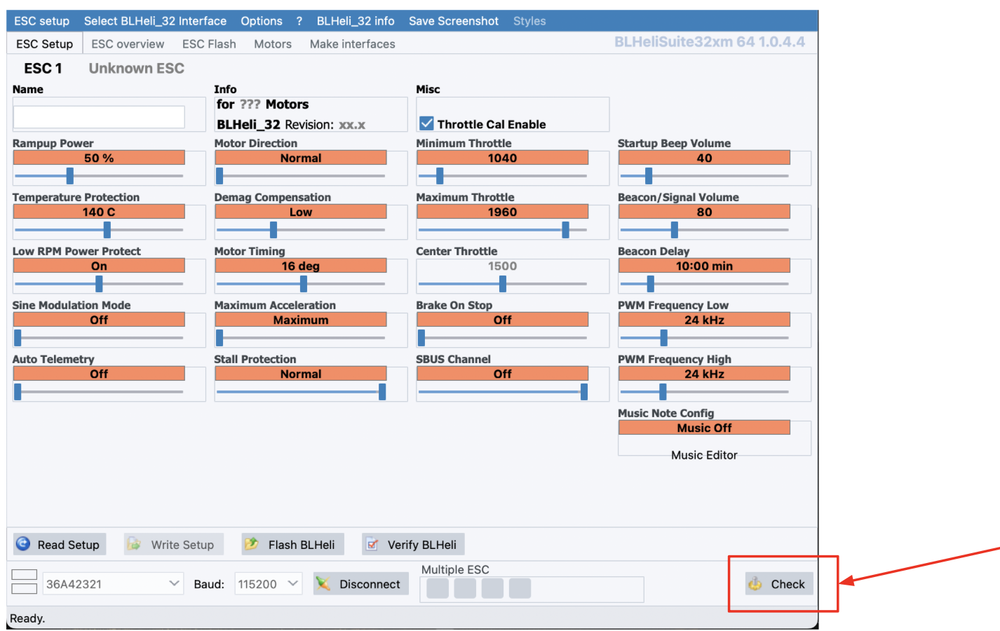
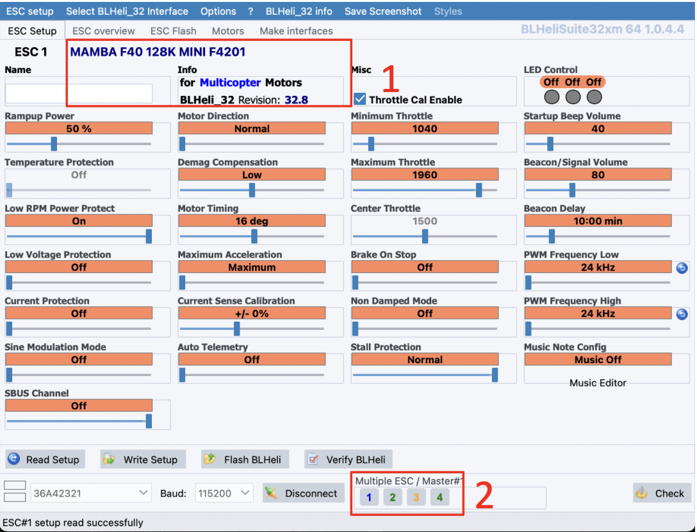
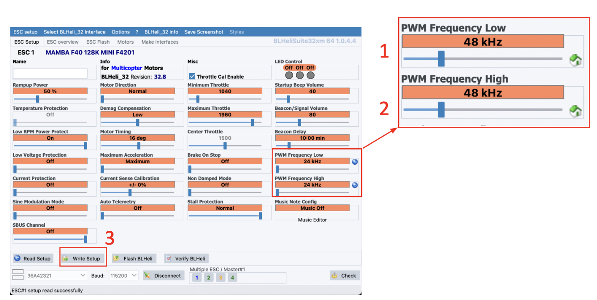
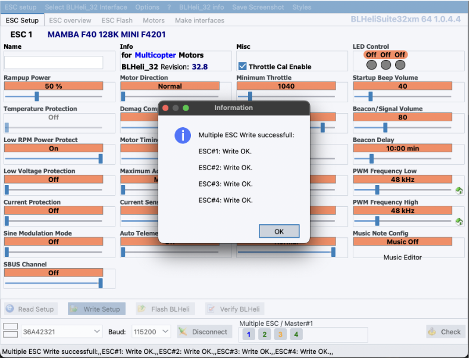
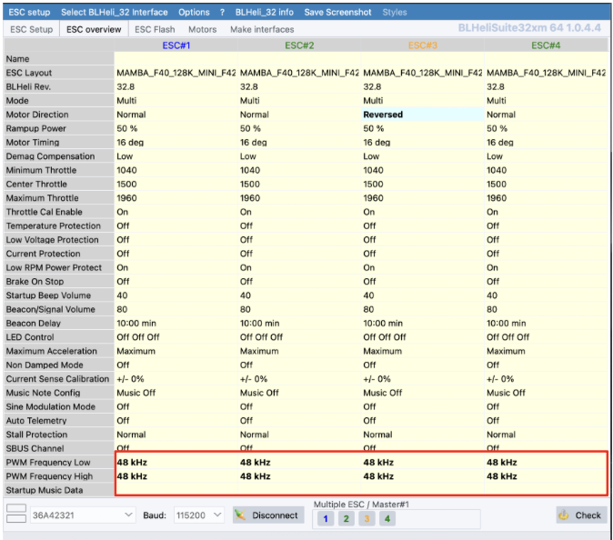

ШАГ 1. Настройка регулятора 4в1
Все инструкции по настройке носят рекомендательный характер. Вы можете использовать свои настройки или скачать готовый конфигурационный файл.
1.1 Установка BLHeliSuite32
Скачайте и установите приложение BLHeliSuite32 с Gitghub.
Ссылка для скачивания BLHeliSuite32: https://github.com/bitdump/BLHeli/releases
1.2 Подключение регулятора 4в1 на ПК
Запустите BLHeliSuite32

Подключите АКБ к Регулятору 4в1
Подключите полетный контроллер к ПК используя кабель USB

Нажмите кнопку “Connect”

Нажмите кнопку “Check”

Программа BLHeli_32 определит модель Регулятора, версию прошивки и каждый из 4-х каналов

Измените значение PWM Frequency High с 24kHz на 48kHz
Измените значение PWM Frequency Low с 24kHz на 48kHz

После успешной заливки параметров вы увидите окно “Multiple ESC Write seccessfull”

Перейдите в раздел “ESC overview” и убедитесь, что параметры “ESC Frequency” записались во все 4 регулятора
